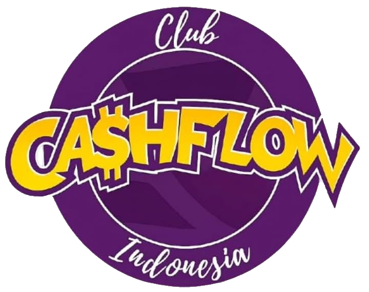

COMMUNITY
Cashflow Club Indonesia
Cashflow Club Indonesia (CCI) adalah komunitas yang mempertemukan individu-individu yang memiliki semangat untuk terus belajar, bertumbuh, dan membangun masa depan finansial yang lebih baik.
Melalui edukasi, networking, dan praktik nyata, CCI menjadi tempat untuk berkembang bersama menuju kehidupan yang lebih berkualitas.
Kenali CCI →